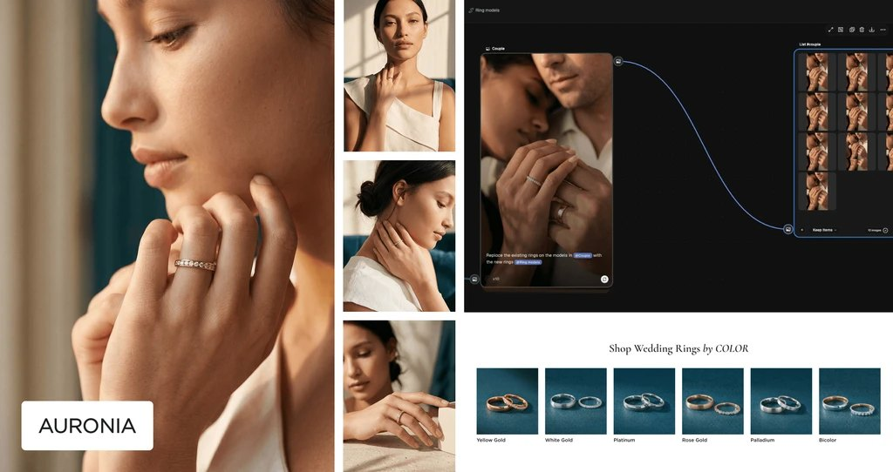

When product photography stopped scaling
Ecommerce · Design system · AI content workflows · 7-year engagementAuronia manufactures customizable wedding and engagement rings, where each product exists in many variations. Over time, the visual system, based mainly on dry 3D renders, became difficult to scale across markets, campaigns, and product configurations, with no lifestyle context or real-world presentation.
The challenge was not building a configurator, but making thousands of ring variations feel emotionally present and visually consistent without a photoshoot for each one. Over seven years I evolved the platform from a standard ecommerce store into a scalable content ecosystem: I built and maintained a Figma design system covering the full product and marketing surface, standardized visual language across markets and campaigns, and developed AI-assisted workflows that replaced traditional photography for variant-level content.
Visual content that previously required individual photography for each variation can now be produced systematically at scale. Campaign creation accelerated, design consistency held across markets, and the brand no longer needs to choose between speed and quality when launching new ring configurations.